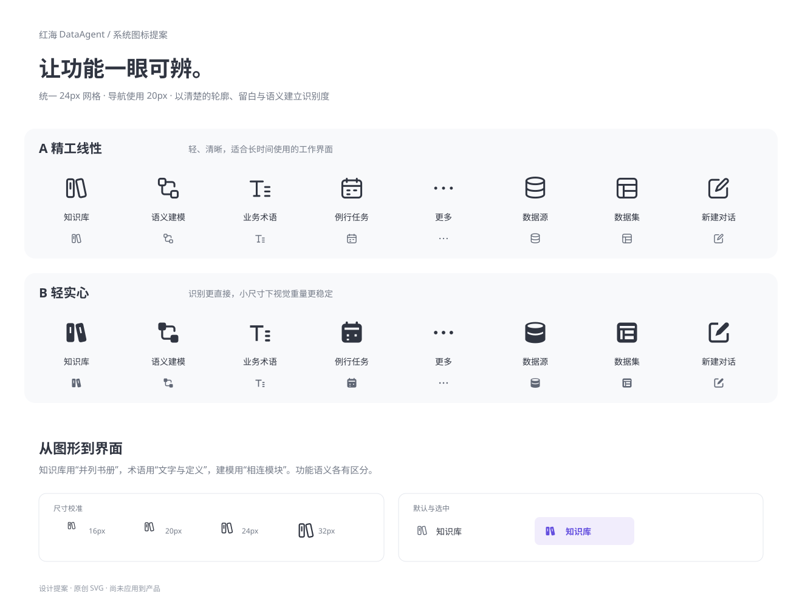
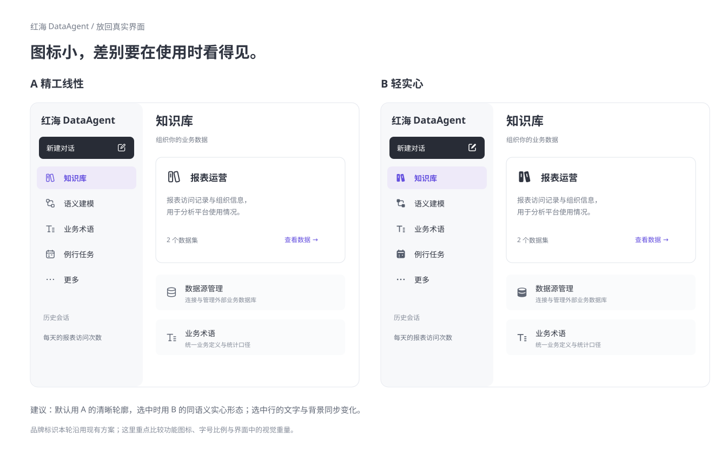

<!doctype html><html lang="zh-CN"><meta charset="utf-8"><meta name="viewport" content="width=device-width,initial-scale=1"><title>红海 DataAgent · 图标设计提案</title><style>body{margin:0;background:#f2f3f6;color:#303541;font:14px/1.8 'Microsoft YaHei',sans-serif}main{max-width:1320px;margin:24px auto}img{width:100%;height:auto;display:block;margin-bottom:24px;background:white}nav{padding:16px;background:white;display:flex;gap:20px;flex-wrap:wrap}a{color:#6550df}</style><main><nav><a href="01-icon-families.svg">查看矢量图稿</a><a href="02-in-context.svg">查看页面效果</a><span>设计提案，供选择；未应用到业务页面。</span></nav></main></html>